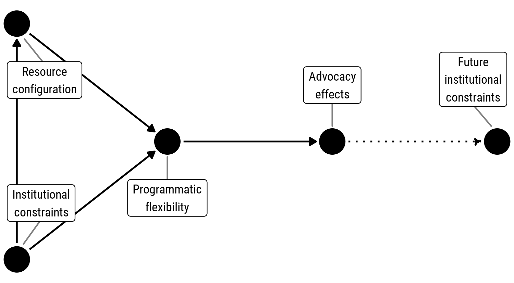

Taking Control of Regulations: How International Advocacy NGOs Shape the Regulatory Environments of their Target Countries
Flexibility—
what lets NGOs reshape
host environment.
Andrew Heiss, “Taking Control of Regulations: How International Advocacy NGOs Shape the Regulatory Environments of their Target Countries,” Interest Groups and Advocacy 8, no. 3 (September 2019): 356–75, doi: 10.1057/s41309-019-00061-0
Other details: Presented at the workshop on Interest Groups, International Organizations, and Global Problem-Solving Capacity, Stockholm University, Sweden, June 2018, organized by Elizabeth Bloodgood and Lisa Dellmuth
Important links
Abstract
A wave of legislative and regulatory crackdown on international nongovernmental organizations (INGOs) has constricted the legal environment for foreign advocacy groups interested in influencing domestic and global policy. Although the legal space for advocacy is shrinking, many INGOs have continued their work and found creative ways to adapt to these restrictions, sometimes even reshaping the regulatory environments of their target countries in their favor. In this article, I explore what enables INGOs to cope with and reshape their regulatory environments. I bridge international relations and interest group literatures to examine the interaction between INGO resource configurations and institutional arrangements. I argue that specific resource and managerial characteristics provide organizations with ‘programmatic flexibility’ that enables groups to adjust their strategies without changing their core mission. I illustrate and test this argument with case studies of Article 19 and AMERA International and demonstrate how organizations with high programmatic flexibility can navigate regulations and shape policy in their target country, while those without this flexibility are shut out of policy discussions and often the target country itself. I conclude by exploring how the interaction between internal characteristics and institutional environments shape and constrain the effects of interest groups in global governance.
Important figures
Figure 1: Relationship between institutional constraints, resource configurations, programmatic flexibility, and advocacy effects

BibTeX citation
@article{Heiss:2019,
Author = {Andrew Heiss},
Doi = {10.1057/s41309-019-00061-0},
Journal = {Interest Groups and Advocacy},
Month = {9},
Number = {3},
Pages = {356--375},
Title = {Taking Control of Regulations: How International Advocacy {NGOs} Shape the Regulatory Environments of their Target Countries},
Volume = {8},
Year = {2019}}